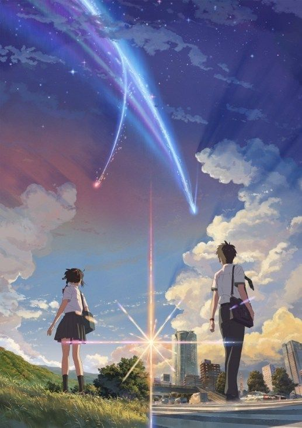

Ulasan Anime Kimi no Nawa

Kimi no Na Wa. (Your Name.) atau dalam bahasa Jawa krama Asma Panjenengan, atau dalam bahasa Arabnya, اسمك (ismuka). adalah sebuah film animasi garapan sutradara Makoto Shinkai. Film ini dikerjakan oleh studio CoMix Wave Films dan telah dirilis di Jepang pada 26 Agustus 2016. Film ini memenangkan berbagai penghargaan untuk karya animasi dari berbagai pihak, seperti 49th Sitges Film Festival, 18th Bucheon International Animation Festival, 29th Tokyo International Film Festival, Newtype Anime Award dan 41st Hochi Film Award.
Mitsuha Miyamizu adalah seorang gadis polos yang tinggal di kota Itomori, sebuah kota kecil di prefektur Gifu. Mitsuha muak tinggal di daerah pedesaan yang menurut dirinya membosankan. Membosankan karena tidak ada café di desa, minimarket tutup jam 9, matahari cepat terbenam dan tapi entah mengapa, kota ini memiliki 2 bar. Selain itu, dirinya yang merupakan keturunan pendeta kuil setempat juga merasa muak karena status tersebut membuatnya malu di hadapan teman-temannya karena ia harus mengikuti ritual-ritualnya. Oleh karena itu, Mitsuha berangan-angan menjadi “Lelaki tampan dari Tokyo” di kehidupan selanjutnya.
Ternyata permintaanya terkabulkan. Saat Mitsuha terbangun dari tidurnya, dia bertukar raga dengan sang Lelaki Tampan dari Tokyo bernama Taki Tachibana. Taki dan Mitsuha mengira bahwa kejadian tersebut adalah mimpi, namun ternyata semuanya nyata. Karena harus berinteraksi dengan lingkungan baru secara mendadak, kekacauanpun terjadi. Teman-teman di sekitar lingkungan Taki dan Mitsuha merasa heran karena Taki yang biasanya maskulin mendadak menjadi feminin dan Mitsuha yang sangat sopan berubah menjadi tomboy.
Mitsuha yang berada di tubuh Taki terkejut karena dirinya tiba-tiba menjadi cowok, terlebih pada saat mengetahui ada “sesuatu” di antara kedua kakinya. Mitsuha yang semula tinggal di pedesaan, tiba-tiba berada di Tokyo dan harus menjalani hidup sebagai laki-laki. Taki yang juga bekerja paruh waktu di sebuah restoran italia juga harus dilakukan oleh Mitsuha (dalam tubuh Taki). Karena ulah Mitsuha, Taki secara tidak langsung bisa mendekati seorang senior perempuan di restoran tempat ia bekerja dan membuat koleganya iri hati.
Untuk memecahkan misteri kenapa mereka bertukar raga, mereka selalu bertukar memo sebelum mereka pergi tidur, agar pemilik tubuh sebenarnya mengetahui apa yang telah terjadi saat mereka bertukar raga. Namun setelah komet jatuh, mereka berdua tak pernah lagi bertukar raga. Taki yang merasa penasaran kenapa pertukaran ini berhenti pun mencoba mencari tahu apa yang terjadi.
Dari segi animasi, saya mengakui bahwa animasinya digarap dengan sangat apik. Dimulai dari close up, shot panorama pemandangan Itomori, penggambaran garis langit tokyo sangatlah memukau. Khususnya bagian shot up saat komet melintas bumi, Makoto Shinkai dan timnya berhasil menyajikan penyutradaraan yang pantas mendapatkan penghargaan film. Visual dari Your Name sangat dipengaruhi oleh latar belakang Makoto Shinkai sebagai mantan desainer grafis. Tentu saja kesuksesan ini tak luput dari proyek-proyek sebelumnya yang memang menyajikan kombinasi visual dan penyutradaraan yang wow.
mulai dari plot dan trailer yang disuguhkan, saya tidak akan terlalu membahasnya dalam-dalam. Pertukaran raga bekerja sebagai plot device namun ternyata kunci-kunci misteri dari konflik utama disajikan secara cerdik. Pengembangan konflik utamanya juga dikembangkan agar membawa perasaan dan pikiran penontonnya. Menariknya, trailer-nya memberikan kunci misterinya tanpa menampilkan konflik utamanya. Transisi dari sisi komedik, drama maupun ketegangannya juga membuat penonton ikut penasaran, khususnya saat konfliknya semakin memuncak. Sayangnya, drama perjalanan mencari jati diri kedua remaja yang disajikan terasa generik. Yang saya sayangkan, apa yang disodorkan pada awal film ini sangat bertolak belakang dengan apa yang terjadi di bagian kedua film ini. Plot yang dibangun di awal film harus dihancurkan dan digantikan dengan plot baru yang terasa “dipaksakan”. Shinkai berhasil menutup lubang-lubang plot minor namun di tengah perjalanan film ini, tiba-tiba ada lubang yang lebih besar dan Shinkai harus memulai dari awal lagi. Ending yang ditampilkan pun sebenarnya menyenangkan, namun dibandingkan dengan konflik yang mendahuluinya, terasa hambar walaupun tetap menarik. Muncul kesan “lho cuma begitu aja?” saat melihatnya.